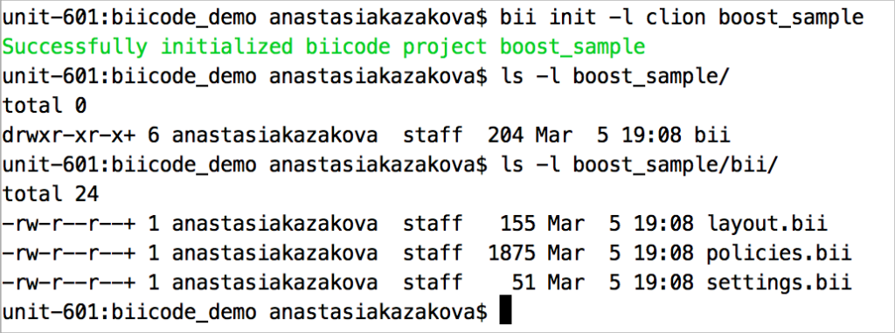
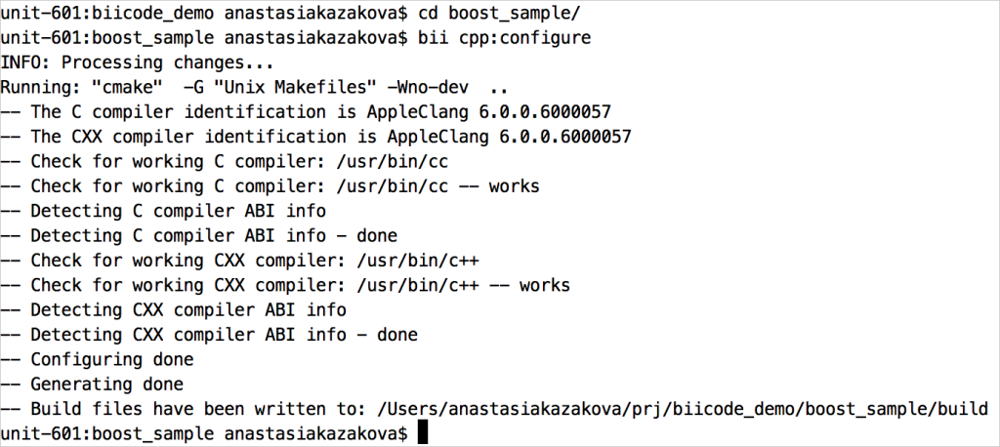
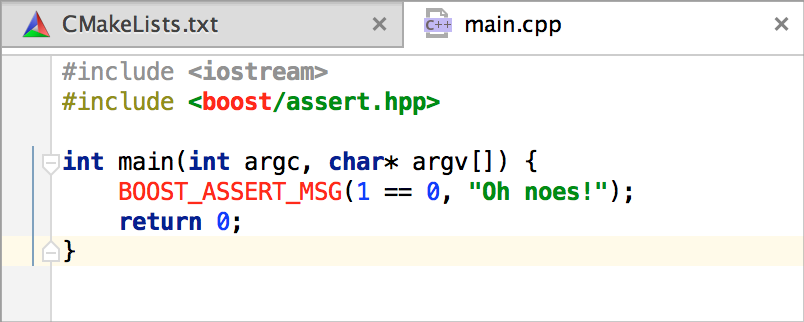
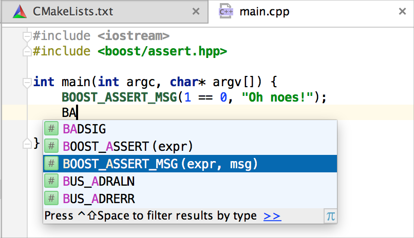

Cross post from the CLion team: biicode integration in CLion!
C and C++ have a long history going back to the early days of programming. Over three decades, many interesting tools have appeared in the field: debuggers, compilers, memory analyzers and code analyzers for these languages are evolving swiftly. But how about a dependency manager? Can C/C++ developers save their time by configuring and installing various libraries used in their projects?
Luckily there is a very interesting cross-platform tool called biicode. With biicode, you can reuse any single source file from any given project in any other project you are developing. It tracks and manages versions of published code and retrieves the missing files from the repository (GitHub and Bitbucket are supported for now). In its latest versions, it supports boost libraries, Eigen and many others, and can even work with Arduino boards. The original content is here.

Interestingly, biicode uses CMake to configure and build projects. Having that in common, we knew CLion and biicode had to start a relationship.
CLion is a cross-platform C/C++ IDE, which uses CMake build system as the project model. Now, there’s one more benefit you can get from it: a very simple and straightforward way to use biicode features together with the IDE. (You’ll need biicode 2.4.1 or higher and the latest CLion EAP.)
CMake layout for the project is generated by biicode commands, after which you can open the project directly in CLion. You can resolve dependencies and install the missing libraries easily by using bii commands from the CLion built-in terminal (Alt+F12). Let’s take a short overview of the overall process and some available features.
Download the latest version of biicode from the biicode website. To create a new project, run the command bii init -l clion <prj_name>, which will generate the proper layout to be used in CLion:

To configure your project, run bii cpp:configure:

As you can see, these commands produced CMake-based output which can be simply opened in CLion via File | Open… Now you can use CLion for working on your project.
One extra benefit is that bii commands can be called directly from the IDE’s terminal (open it with Alt+F12).
Let’s talk about resolving dependencies in your projects. Assume you are going to use boost libraries, for example, in very simple and demo-like code below:

Because the project doesn’t have any boost dependency, CLion highlights boost-related code with red; no code completion or navigation features are available at this point. We’ll update the CMakeLists.txt file following instructions from the biicode website as follows:

Then we run the commands bii find and bii cpp:configure. After biicode downloads and installs all the missing dependencies and the CMake project in CLion is reloaded, the code is highlighted with green. Smart actions now work fine, as does code completion:

That’s it! Get CLion EAP build and install biicode to try them together now.
Related Posts